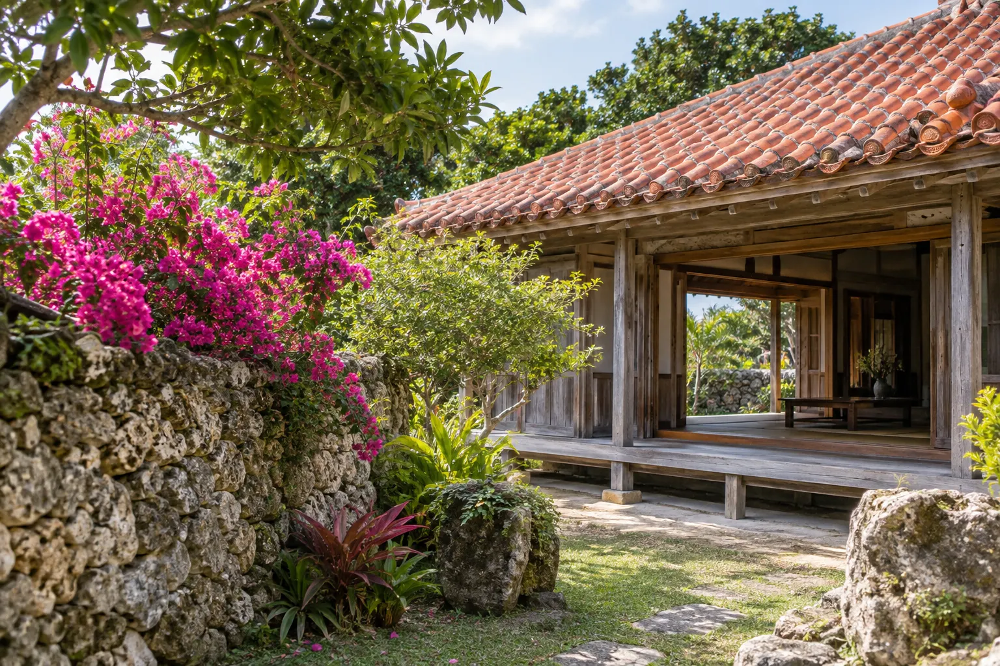
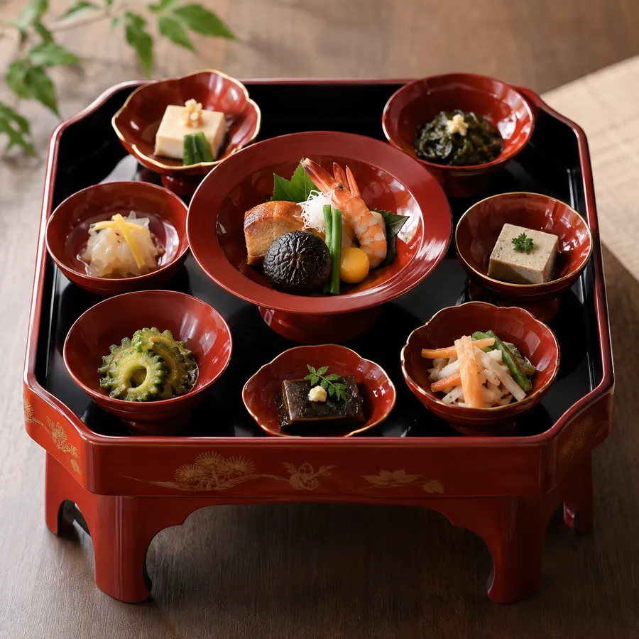
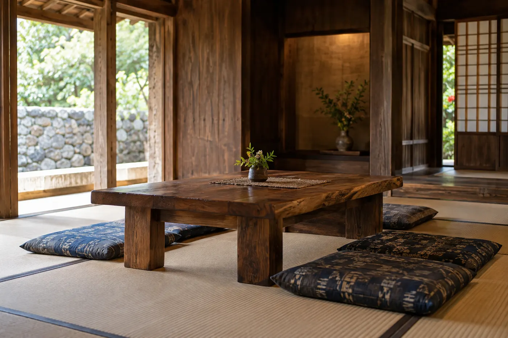
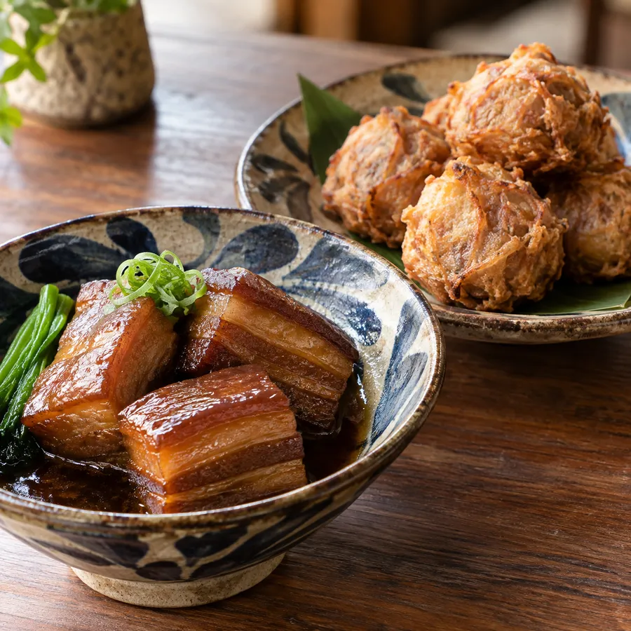

An old house where the Shuri breeze flows.
Reservations required ・ Ryukyu & royal court cuisine
Ryukyu and royal court cuisine in a red-tiled traditional house, a short walk from Shurijo Castle.
Concept
Shuri has been a town of hospitality cuisine since the days of the Ryukyu Kingdom. Rafute braised pork, dururu-ten fritters, mimiga salad — each dish made the old-fashioned way, with no shortcuts.
Relax on the veranda overlooking the garden. Our awamori list gathers a bottle from distilleries across Okinawa.
Owner

Menu
Prices include tax, per person.
Interior
Tatami rooms and veranda seating for up to 20 guests — perfect for family gatherings.


Information
Reservations
Reservations required. Book by phone, LINE or online.